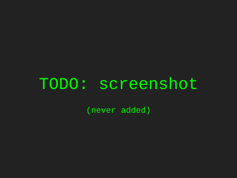

back?
Click
More
n/a
the banking app but wait
NEW CASE STUDY NEW CASE STUDY
So the solution was a prix-fixe menu. I made the type bigger in some places and smaller in other places. Users can now "order" a checking account the way you order soup. I did not include any screenshots of the actual interface because the file was on a laptop I left at a WeWork.


Quick aside: for lunch that day I had a turkey sandwich that was honestly too dry, and I think that dryness influenced the visual language? Like the breadcrumbs were a metaphor for information architecture. I also watched two episodes of a show I will not name. Anyway back to the work: I used a 12-column grid except when I didn't. Stakeholders said "interesting" which I took as a yes. The research sample was my roommate.
role: everything
Outcomes: it went well. Engagement went up by a number. Conversion was better, or similar. The client is still answering emails sometimes. Success.
next
there is more work probably